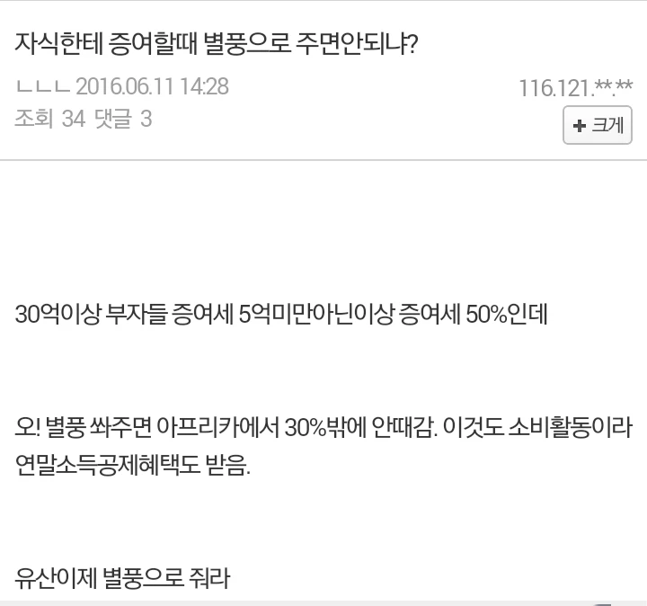

획기적인 재산 증여 방법
댓글
그래서 부자들이 증여로 쓰는게 수억 수십억의 생명보험임
2000년대 말쯤에 미술품이랑 쇼핑몰로 이지랄들 하다가 전부 국세청이 이놈 했음.
그때 방식이 아들이 화가로 등록, 존나 난해한 현대미술 그림을 그림. 주로 잭슨폴락 스타일.
그걸 부모가 5억에 구매. 미술품이라 부가세도 면제.
쇼핑몰 방식은 비슷한데, 옷 한 벌에 천만 원 가격표 붙여서 파는 방식이었는데 이것도 다 걸렸음.
그래서 외국은 희귀 동전으로 함
세금 걱정되면 무조건 세무사 상담해라.
보험사 기업전문팀도 좋고, PB 들 그런 거 하라고 있는 거다.
세무사들은 몸 사리지만, PB 들은 과감하게 해준다.특히 보험설계사들은 불법 경계선, 교도소 담장 위 걷는 길까지 상담해 준다.
제 천생연분은 어디있나요
세금 걱정돼서 천생연분을 못 만나시나요? ㅡ,.ㅡa
그러다 교도소 운동장 걷는길도 덤으로 상담받는거 아니냐
비트코인으로 이미 많이했고 비상장사투자도 많이 하고 할수 있는거 많음 뭔 별풍 ㅋㅋ
현금 전환후 현금으로 쓰는사람 있던데..
그냥 해외거래소 헷지계좌 각 명의로 2개만들고 30억넘겨
무과세
외곽에 베이커리 카페 지어서 이런거 많이 함
상속세 50퍼 낼정도면 재산이 수백억일껄 ㅋㅋ